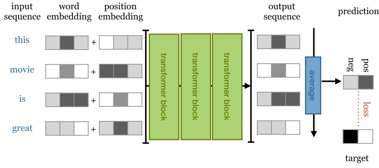

Transformer
Architecture overview
Bartosz WójtowiczPresentation outline
- What's wrong with RNNs?
- Attention
- Attention is all you need
- Multi-Head Scaled Dot-Product Attention
- Positional Embeddings/Encodings
- Encoder Block
- Decoder Block
- Architecture examples
What's wrong with RNNs?
Conventional encoder-decoder seq2seq approaches like RNNs and LSTMs suffer from:
- Inefficiency - hard to parallize!
- Long term dependencies - still bad performance!
- Backpropagation through sequence
Original Attention
Intuition - weighed sum of inputs, where weights are learn through simple NN
Key insights:
- During decoding: take weighed sum of all encoder inputs up to this point and pass them to hidden state
- Provides context for given decoder step
- Removes bottleneck of previous encoder-decoder architectures
Self-Attention
Attention mechanism relating different positions of a single sequence in order to compute a representation of the same sequence.
Attention is All You Need
Transformer model - built entirely on self-attention without any recurrence
Transformer - Quick Look
- Encoder - maps input sequence into a latent representation (memory) of the whole sequence.
- Decoder - generates output based on memory and already generated words.
Position information
Each layer in our model is permutation invariant (no recurrence, no convolution). If we change the order of words in a sentence, we get the exact same output.
We want our model to make use of the order of the sequence.
Positional Embedding
Just as we create (learnable) embeddings $v_{\text{cat}}, v_{\text{dog}}$ for words, we also create embeddings $v_{1},...,v_{m}$ for each position in a sequence.
+ easy to implement, works well
- need sequences of every length during training
Positional Encoding
We use function $f: N \to \mathbb{R}^K$ (usually a combination of $sin$ and $cos$ functions) to create positional embedding for different positions.
+ works just as well as embeddings
+ deals with sequences longer than in training
- a little harder to implement
- choice of encoding functions can be hard
Self-Attention - transformer
We are transforming input vectors $x_1, x_2,..., x_t$ into corrseponding output vectors $y_1, y_2,..., y_t$.
E.g. $y_i$ can be weighed avereage over all input vectors.

$y_i = \sum_{j} w_{ij}x_j$
$w'_{ij} = x_{i}^{T}x_j$
$w_{ij} = \text{softmax}(w'_{ij})$
Self-Attention - key, value, query
From each input vector $x_i$ we derive three new vectors called $query, key$ and $value$ by linear transformation on $x_i$
- Query $q_i$ - compared to every other input vector (keys) to establish weights for its own output $y_i$
- Key $k_i$ - compared to every other input vector (query) to establish weights for the other, $j$-th vector $y_j$
- Value $v_i$ - part of the weighed sum to compute $y_i$, weights computed from keys and queries
Self-Attention - key, value, query

$k_i = W_kx_i$
$v_i = W_vx_i$
$q_i = W_qx_i$
$y_i = \sum_{j} w_{ij}v_j$
$w'_{ij} = q_{i}^{T}k_j$
$w_{ij} = \text{softmax}(w'_{ij})$
Self-Attention - Scaling dot product
The next trick is to scale our dot product by $\frac{1}{\sqrt{d_k}}$, where $d_k$ is the length of our embedding vector.
$y_i = \sum_{j} w_{ij}v_j$
$w'_{ij} = \frac{q_{i}^{T}k_j}{\sqrt{d_k}}$
$w_{ij} = \text{softmax}(w'_{ij})$
Scaled Dot-Product Attention
$\text{Attention}(Q, K, V) = \text{softmax}(\frac{QK^T}{\sqrt{d_k}})V$
Keys, values and queries are packed into matrices $K, V, Q$, which enables the attention function to be computed simultaneously over set of queries.

Scaled Dot-Product Attention
$\text{Attention}(Q, K, V) = \text{softmax}(\frac{QK^T}{\sqrt{d_k}})V$
class SelfAttention(nn.Module):
def __init__(self, emb_dim):
super().__init__()
self.emb_dim = emb_dim
self.tokeys = nn.Linear(emb_dim, emb_dim, bias=False)
self.toqueries = nn.Linear(emb_dim, emb_dim, bias=False)
self.tovalues = nn.Linear(emb_dim, emb_dim, bias=False)
def forward(self, x):
b, t, dk = x.size()
queries = self.toqueries(x)
keys = self.tokeys(x)
values = self.tovalues(x)
dot = torch.einsum("bqe, bke -> bqk", [queries, keys])
softmaxed = torch.softmax(dot / (dk ** (1/2)), dim = 2)
out = torch.einsum("bqk, bke -> bqe", [softmaxed, values])
return out
Multi-Head Attention
We just stack several "Scaled Dot-Product Attention" :)
Each attention mechanism (indexed by $h$) with different $W_{k}^{h}$, $W_{v}^{h}$, $W^s_{h}$ matrices.
For input $x_i$, we produce different output vector $y_i^s$ for each head.
We concatenate vectors $y_i^s$ and transform them linearly back to our expected dimension.
Multi-Head Attention
$$\text{MultiHead}(X) = \text{Concat}(\text{head}_1, \text{head}_2,..., \text{head}_h)W_o$$ $$\text{head}_i = Attention(Q^i, K^i, V^i) $$
$ Q^i = XW_q^i $
$ K^i = XW_k^i $
$ V^i = XW_v^i $

Multi-Head Attention
class MultiHeadSelfAttention(nn.Module):
def __init__(self, emb_dim, heads = 8):
super().__init__()
self.emb_dim = emb_dim
self.heads = heads
# we combine all heads into single linear transformation
self.tokeys = nn.Linear(emb_dim, emb_dim * 8, bias=False)
self.toqueries = nn.Linear(emb_dim, emb_dim * 8, bias=False)
self.tovalues = nn.Linear(emb_dim, emb_dim * 8 , bias=False)
self.unifyheads = nn.Linear(emb_dim * 8, emb_dim)
def forward(self, x):
b, t, dk = x.size()
h = self.heads
queries = self.toqueries(x).view(b, t, h, dk)
keys = self.tokeys(x).view(b, t, h, dk)
values = self.tovalues(x).view(b, t, h, dk)
dot = torch.einsum("bqhe,bkhe -> bhqk", [queries, keys])
softmaxed = torch.softmax(dot / (dk ** (1/2)), dim = 3)
out = torch.einsum("bhqk, bkhe -> bqhe", [softmaxed, values])
return self.unifyheads(out)
Encoder Block
- Multi-Head Self-Attention
- FC Feed Forward - applied independently and identically to each vector. Two linear transformations with ReLU in between.
- Residual connections (added before normalization)
- Layer normalization

Let's see it in code!
Encoder code
class Encoder(nn.Module):
def __init__(self, emb, heads, hidden_multiplier = 4):
super().__init__()
self.attention = MultiHeadSelfAttention(emb, heads=heads)
self.norm1 = nn.LayerNorm(emb)
self.norm2 = nn.LayerNorm(emb)
self.ff = nn.Sequential(
nn.Linear(emb, hidden_multiplier * emb),
nn.ReLU(),
nn.Linear(hidden_multiplier * emb, emb)
)
def forward(self, x):
attended = self.attention(x)
x = self.norm1(attended + x)
forwarded = self.ff(x)
return self.norm2(forwarded + x)
Decoder Block
- First Multi-Head Attention modified to prevent positions from attending to subsequent positions
- Encoder-Decoder: Keys and Values from Encoder, Query from Decoder
Implementation
Left as an exercise for the reader :)
One more look
Bonus!
Encoder-Only architecture examples
Simple sequence classification transformer
Simple sequence classification transformer
class ClassificationTransformer(nn.Module):
def __init__(self, emb_dim, heads, depth, max_seq_length, num_tokens, num_classes):
super().__init__()
self.num_tokens = num_tokens
self.token_emb = nn.Embedding(num_tokens, emb_dim)
self.pos_emb = nn.Embedding(max_seq_length, emb_dim)
# stacked transformer blocks
blocks = [Encoder(emb = emb_dim, heads = heads) for _ in range(depth)]
self.blocks = nn.Sequential(*blocks)
# classification on top of transformer blocks
# (averaged transformer output sequence as input)
self.toprobs = nn.Linear(emb_dim, num_classes)
def forward(self, x):
b, seq_length = x.shape
# using positional embedding
# easier to implement than positional encoding
positions = self.pos_emb(torch.arange(0, max_seq_length, device = 'cuda').expand(b, max_seq_length))
tokens = self.token_emb(x)
# entire forward pass with mean
# averaging the last output sequence
x = tokens + positions
x = self.blocks(x)
x = x.mean(dim=1)
x = self.toprobs(x)
return F.log_softmax(x, dim = 1)
BERT
BERT (largest) = stack of 24 encoder blocks with embedding dimension of 1024 and 16 attention heads.
It is pretrained on 800M words from English books and 2.5B words from wikipedia.
Pretraining is done with 2 tasks:
- Masking
- Next sentence classification
Masking
We replace randomly 15% of words in the input sequence. The model is then asked to predict the masked words.
Masking procedure:
-
[MASK] token - 80% of time:
my dog is hairy -> my dog is [MASK] -
Random token - 10% of time:
my dog is hairy -> mydog is apple - Unchanged token - 10% of time: my dog is hairy -> mydog is apple
Next sequence classification
We sample 2 sequences from our corpus that either:
- Follow each other directly
- Are taken from random places
The model is then asked which of those is the case.

The end!
References
- https://lilianweng.github.io/lil-log/2018/06/24/attention-attention.html
- https://www.youtube.com/watch?v=iDulhoQ2pro
- http://jalammar.github.io/illustrated-transformer/
- https://lionbridge.ai/articles/what-are-transformer-models-in-machine-learning/
- http://peterbloem.nl/blog/transformers
- https://arxiv.org/abs/1810.04805
- https://arxiv.org/abs/1706.03762
- https://github.com/BartWojtowicz/transformer-from-scratch